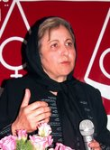
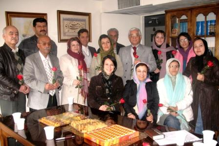
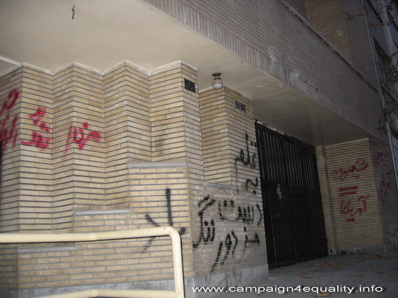

|
|
|
Browsing
Contact Us |
Campaigners |
Face to Face |
Tribune |
Interview |
News |
On the Web |
One Million |
Report
Farsi | Français | German | Italian | Spanish | العربية Also in this section
|
 News On Pressures on Shirin Ebadi and the Defenders of Human Rights Center Campaign to Defend the Defenders of Human Rights Center LaunchedSaturday 3 January 2009 JANUARY 25, 2009 Campaign to Defend the Defenders of Human Rights Center Launched Change for Equality: January 25, 2009: A Campaign to defend the Defenders of Human Rights Center, a human rights NGO headed by Shirin Ebadi, was launched on Friday January 23, 2009. This Center was raided and closed by authorities on December 21, 2009. Some of the members of this Campaign visited with Shirin Ebadi and other lawyers and members of the Center, including Abdolfatah Soltani, Nargess Mohammadi, Dr. Ismailzadeh, and Mohammad Seifzadeh.
In this meeting the activists starting the Campaign in defense of the Center, stressed the importance of immunity for human rights lawyers in relation to their human rights activities. These activists, who are largely involved in the women’s movement, also explained in this meeting that they were upset by the closure of the Center and the treatment and those working with the Center, mainly Shirin Ebadi, who has had her office searched and property seized and her home vandalized by a mob, have received in recent weeks. Also, Jinus Sobhani the administrative assistant working with the Center was arrested on January 14, 2009.
 Shirin Ebadi and other lawyers and activists working with the Center welcomed the decision to set up a Campaign in defense of the Center and expressed their gratitude to members of the women’s movement who have provided much support in this difficult time. Shirin Ebadi explained: "The demands of the Iranian feminist movement is supported by Iranian women and Iranian men alike. This movement is the strongest movement in Iran, as well as in the Middle East. There is no other movement as broad as the Iranian women’s movement, with as much impact in the region. The path which the women’s movement has ventured upon, through collective action, has transformed into a model for others working in the region as well. In my trips around the world, I am often asked about the One Million Signatures Campaign, and this [attention to the Campaign] is yet another accomplishment of which we as Iranians can be proud." As a first step in their activities in support of the Defenders of Human Rights Center, the members of this Campaign intend to start a blog. JANUARY 24, 2009 Clients Writing in Support of their Lawyers Change for Equality: January 24, 2009: Eighteen women’s rights activists have written in support of Shirin Ebadi and the work of other lawyers at the Defenders of Human Rights Center. The intro to the collective piece reads as follows: "Neither the advocacy of Shirin Ebadi nor that of other human rights lawyers working with the Defenders of Human Rights Center can be restricted with unproven excuses and charges, or even with the closure of their office. The impact that these defenders of human rights have had on the promotion of human rights is so deep and institutionalized that they render seals, locks and closures ineffective. Which of these efforts to restrain and restrict can quiet the voice of Ebadi? How can the efforts and voice of these lawyers intent on defending the rights of the accused and educating the public about human rights, citizen’s rights, women’s rights, the rights of minorities, etc. be silenced? The following is or the role of the lawyers working with Defenders of Human Rights Center, who have tirelessly worked to teach about human rights, the rights of citizens, women, etc." These writings by 18 activists who have had the privilege of being represented by Shirin Ebadi or one of the lawyers at the Defenders of Human Rights Center paint a picture of their activities from the perspective of clients. We hope to have a translation of these writings posted here soon. JANUARY 15, 2009 THE OBSERVATORY FOR THE PROTECTION OF HUMAN RIGHTS DEFENDERS PRESS RELEASE IRAN: Arrest of Ms. Jinus Sobhani, a member of the Defenders of Human Rights Centre Paris-Geneva, January 15, 2009. The Observatory for the Protection of Human Rights Defenders, a joint programme of the International Federation for Human Rights and the World Organisation Against Torture (OMCT), firmly denounces the arrest of Ms. Jinus Sobhani, administrative assistant of the Defenders of Human Rights Centre (DHRC) and the Centre for the Mine Cleanup Project (CMCP), two organisations founded by Nobel Peace Prize winner Shirin Ebadi and both arbitrarily closed down at the end of December 2008. In the morning of January 14, 2009, Ms. Jinus Sobhani was arrested at her residence, following a home search and the seizure of her personal belongings and those of her husband, by security officers. No arrest or search warrant was presented to Ms. Sobhani. At the time of issuing this press release, no information could be obtained regarding her whereabouts and place of detention. The Observatory strongly condemns this arbitrary arrest which is another evidence of the determination of the Iranian authorities to intensify their crackdown on independent civil society, of which the DHRC and Ms. Ebadi are prominent symbols. To that extent, the Observatory recalls that Ms. Ebadi has been subjected to a campaign of defamation, and more recently to legal harassment, which might be followed by the opening of judicial proceedings against her in an attempt to silence her legitimate work for the defence of human rights in Iran. Accordingly, the Observatory calls upon the Iranian authorities:
For further information, please contact: FIDH: Gaël Grilhot / Karine Appy, + 33 6 48 05 91 57 / + 33 1 43 55 14 12 OMCT: Delphine Reculeau, + 41 22 809 52 42 JANUARY 14, 2009 Jinous Sobhani, the Administrative Assistant of the Defenders of Human Rights Center Arrested Public Relations Office of the Defenders of Human Rights Center: January 14, 2009: Jinus Sobhani, who served as the Administrative Assistant of "Center for the Mine Cleanup Project" and "the Defenders of Human Rights Center," until the illegal closure of their joint offices, was arrested on the morning of January 14, 2009. Both of these non-governmental organizations working under the direction of Nobel Laureate Shirin Ebadi are housed in the same office space, which was purchased by Shirin Ebadi, with a portion of her Prize money from the Nobel Peace Prize. The Office was shut down in an illegal manner on December 21, 2008, by security officers. The closure of the Center in particular drew much criticism and condemnation by national and international human rights, political, cultural and social activists and organizations. Jinus Sobhani, besides working for these NGOs, has written on legal issues for several Iranian publications. On the morning of January 14, 2009 at 6:30am her home was searched by security agents and her personal belonging as well as her husband’s belongings were seized. Following the search and seizure of her home, Jinus Sobhani was arrested. JANUARY 2, 2009 The Defenders of Human Rights Center, Public Relations Office Over 500 Women’s Rights and Civil Society Activists Object to the Closure of the Defenders of Human Rights Center January 2, 2009; Change for Equality: On December 21, 2008 the Defenders of Human Rights Center was shut down by security and police officials, despite the fact that no court order was issued allowing for this action. This Center began operation in 2000 and submitted an application for registration to the Commission on the 10th Amendment of the Regulations for Operation of Political Parties*. While the Commission agreed with the establishment of this Center, the Ministry of Interior has under different pretexts refused to issue a permit for operation of this non-governmental Human Rights Organization. The Defenders of Human Rights Center has however been registered as an international entity and is an official member of the International Federation of Human Rights Organizations (FIDH), which includes members from 190 countries. Ms. Ebadi, who received the Nobel Peace Prize in 2003, serves as the Chair of the Defenders of Human Rights Center. Ms. Ebadi utilized a portion of the monetary prize she received for the Nobel Peace Prize to purchase the office space for the Center. According to its mandate the Center works to provide free legal advice to those accused of political crimes and imprisoned for their beliefs; provides support to the families of imprisoned political prisoners; and develops and submits regular national and international reports on human rights violations in Iran. On Sunday December 21, 2008 the Center had planned to hold an event commemorating the 60th anniversary of UN Declaration on Human Rights. This event was cancelled following the storming of the offices of the Center by police and security officials who shut down the Center without a court order. An examination of the activities of this Center and its role in supporting and defending human rights and women’s rights activists in Iran, demonstrates the important role of this non-governmental organization. The silence of equal rights and human rights defenders in reaction to the illegal actions against the Center will only work to promote and reinforce such unjust crackdowns. We the signatories of this statement demand that officials facilitate the re-opening of the Center allowing it to continue with its activities designed to promote human rights. Further we warn that the closure of the Center will not silence the demand for justice. The voice of people will indeed remain thunderous and more forceful than that of States. Read the statement in its original Farsi and to see the signatures. *While the Defenders of Human Rights Center is a non-governmental organization, the subject of human rights is viewed as political, therefore according to regulations organizations addressing political and human rights issues must register with the Commission, in charge of political parties. JANUARY 1, 2009 Evidence of Crimes Against Shirin Ebadi By: Parvin Ardalan
 The vandalized exterior façade of Shirin Ebadi’s apartment building should be preserved as proof of crimes committed by those who stand in opposition to the law and civil action. They have ripped from the wall the sign outside Ebadi’s building, which reads “Shirin Ebadi, Lawyer” trampling it, the mud from their boots testament to the anger with which they attacked her home. On the brick walls of the building, where both Ebadi’s home and office are located slogans have been spray painted. Their intent is to intimidate and demonstrate opposition to this brave defender of human rights and Nobel Peace Prize recipient. These slogans read: “Writer, Traitor, Shame on You!”; “Shirin=America”; and “Death to America; The Ugly American Witch.” These slogans represent the thoughts of a mob, a group of assaulting men and women, who while chanting their slogans marched down the cul-de-sac where Ebadi lives and works. Their intent was to inflict fear in the soul of this brave woman and silence the peaceful demands of a lawyer advocating for her clients, claiming deceitfully that she stands for war and violence instead of peace. All the while the members of this mob don’t understand that the voice of this human rights defender and her demand for justice cannot easily be silenced. Shirin Ebadi laughs and says: “there are a lot of writers on this street, but I am the only writer who is also a traitor! I called the police immediately after the mob arrived. Two police officers arrived on the scene. They stood and watched, as those chanting slogans spray painted my home and attacked the building. They stood and watched, until it was over. The mob left and then the police also left.”
While according to the constitution, peaceful demonstrations are legal, many women’s rights activists have received heavy sentences for their holding and participating in these events. All the while, violent protests, marches and demonstrations, similar to the one which took place outside Ebadi’s residence, are tolerated. In fact not only are these violent protests not condemned as illegal, but police officers stand by watching in a civil and polite manner, refusing to use batons, sticks, kicks and punches to disburse the crowd, so that protesters can control the situation in line with their own aims. Ebadi explains: “if protests and marches do not require permits, then why did the police use all that violence against women’s rights protesters in Haft-e Tir Square? If there is a need for a permit, then why does the police not interfere to stop violent protesters and all these actions take place under the watchful eyes of the police?”
So it seems that the developments in Gaza were just an excuse justifying the attacks of those who are inflamed with anger, and who use the murder of innocent Palestinian civilians as further justification for their own vengeful acts, refusing to acknowledge that the Defenders of Human Rights Center had condemned in a statement the violence and murder of the citizens of Gaza by Israel. The statement reads: “The raw and extreme violence perpetuated in Gaza has injured the conscience of humanity and it is clear that such developments will only work to further endanger sustainable world peace.” What is the justification for this perpetual assault against Ebadi, her private law office and the Defenders of Human Rights Center? Why take the case files of her clients from her law office, under the guise of a tax investigation? And now, Shirin Ebadi herself is being victimized in this way, why? Why is it that during the course of only two weeks the assault against Ebadi has intensified so? During these years and since she received the Nobel Peace Prize in 2003, Ebadi and her colleagues at the Center have not received any financial compensation for the legal services they have provided. The building where the Center is located has been purchased with part of Ebadi’s prize money. Ebadi has served as the pro-bono lawyer for a large number of women’s rights activists, as well as student and political activists. She is the lawyer who has consistently worked to bring justice to the families and victims of the politically motivated serial murders of intellectuals and political dissenters; she has provided support to the grieving father of Zahra Baniyaghoub; she continues to remind us all of the many Zahra Kazemis who have been victimized; she defends the rights of persecuted Bahai’s, and other religious and ethnic minorities. So why has she been met with such great opposition? Why do they fear Ebadi so? Is she looking to gain political power? Ebadi says: “They are upset about two things. When I was awarded the Nobel Peace Prize, they thought to themselves, ‘so what? Someone has won a prize, it’s not important.’ But when they realized the Nobel’s international significance, they changed their minds. They realized that I did not want to use the monetary award for my personal gain or pleasure, rather that I had chosen to continue speaking about the law, and remained committed to using the very law which they themselves drafted and adopted in an effort to defend the rights of my clients. There are those who are threatened by these facts. We are not a political party, with our own hidden agenda, as such people turn to us and for this reason there are those who feel threatened.” The experience of establishing the National Peace Council and the receptiveness of political and social activists to Ebadi’s invitation to join the Council, is testament to the trust she enjoys among different groups of activists and her capacity to have real impact. Perhaps she is right that they are nervous and fearful that the National Peace Council will be met with public receptiveness allowing Ebadi the power and position to enter into politics. Ebadi says: “They are afraid that I may want to enter politics. I have no intention of doing so. I didn’t even take a position in the presidential elections. I remained neutral, not because I had a problem with the candidates, rather because I object to the laws overseeing elections and the vetting process. But they don’t understand these distinctions and believe that I am seeking political posts and power. In line with this thinking, they are intent on inflicting fear, so that people become nervous about associating with me, so that I become isolated. They believe I must be silenced.”
But can they silence this voice or through the infliction of fear and intimidation can they limit and put an end to the relations of Ebadi with her clients? Ebadi says: “I don’t know where the government stands, but I do know where I stand. I will continue with my human rights work within the framework of the law. I will not abandon my activities as a result of threats and intimidation. Let them shut down our human rights Center, take my client files, but I will continue.” I take the sign which has been torn from the wall to place it back in its original position. It reads: “Shirin Ebadi, Legal Advisor and Lawyer.” Ebadi says: “let it be. I want it to remain as evidence.” JANUARY 1, 2009 Attack on Home of Shirin Ebadi Public Relations Office of the Defenders of Human Rights Center: On the morning of Thursday January 1, 2009 a group of 150 persons appeared in front of the residence of Ms. Shirin Ebadi chanting the following slogan: "Ebadi supports, Israel slaughters." This group of protesters then proceeded to vandalize the Sign outside the home of Ms. Ebadi and began kicking in the door of the building.* This protest took place despite the fact that Defenders of Human Rights Center had issued a statement condemning the recent violence in Gaza, and demanding a quick international and human rights response. Additionally, members of the Defenders of Human Rights Center, of which Ms. Ebadi is a founding member, as well as Ms. Ebadi herself in various interviews have repeatedly stressed the need to prevent the violence against and the murder of Palestinian citizens and insisted on the ensuring the dignity and rights of Palestinians. This group of protesters was disbursed after police arrived on the scene. A few days ago on December 29, 2008, 5 security agents claiming to be tax agents went to Shirin Ebadi’s private law office, and proceeded to search the premises, seizing two computers and her client case files. The offices of the Defenders of Human Rights Center was also shut down on December 29, 2008, after security agents stormed the premises, searching it and seizing property. Read related news about the closure of the Center and search of Ebadi’s law office. Read the statement issued by the Defenders of Human Rights Center condemning the violence in Gaza. * Ms. Ebadi’s home and office are located in the same building on different floors in a quiet cul-de-sac. See related news: Boston Globe: The Campaign to Silence Ebadi Reuters: US Condemns Harassment of Nobel Laureate The New York Times: The Woman the Mullahs Fear AFP: Iranian Students Protest at Ebadi’s Home CNN: Protesters attack Tehran home of Nobel winner BBC: Iranian raid on Ebadi condemned LA Times: Nobel Peace Prize laureate Shirin Ebadi of Iran is Threatened at her Home DECEMBER 29, 2008 Shirin Ebadi’s Private Law Office Stormed by Security Forces December 29, 2008; Change for Equality: On Monday December 29, 2008 at 5:30 in the afternoon the private law office of Shirin Ebadi, Nobel Peace Prize Winner, Lawyer and human rights defenders was stormed by 5 security officers identifying themselves as tax officials, who presented a letter allowing them to take two computers and other documents. Shirin Ebadi has however refused to surrender her case files and computers to these officials citing that the confidential nature of the work of lawyers, especially human rights lawyers, and claiming that the act of surrendering client files to government officials would breach that confidentiality. These security officials are presently in Ms. Ebadi’s private law office and engaged in search of the premises and seizure of property. This latest assault takes place following the closure of the Defenders of Human Rights Center on December 21, which provides free legal advice and support to human rights defenders and of which Ebadi is a founding member. A few days following the closure of the Center, tax officials had gone to Ebadi’s private practice making inquiries about her income and tax payments. Ms. Ebadi was extremely cooperative during this inquiry, so much so that tax officials thanked her for her cooperative approach. These officials examined computers and other documents in Ebadi’s office and announced that since there were no documents related to her income or tax payment they would not remove any documents or computers from the office. Despite this development, on the following day, Mehr News Agency, announced in a report that Shirin Ebadi had failed to pay her taxes. This news was refuted by Shirin Ebadi. This latest assault seems to be part of an ongoing Campaign of harassment of Shirin Ebadi, human rights defenders as a whole and reflects the worsening situation of human rights in Iran. We will provide news on further developments in this respect. DECEMBER 21, 2008 The Defenders of Human Rights Center Raided and Closed Change for Equality: On Sunday December 21, 2008 plain clothes and uniformed police and security officials raided the offices of the Defenders of Human Rights Center (DHRC), a human rights Organization headed by Nobel Peace Prize winner Shirin Ebadi, preventing a delayed celebration of the 60th anniversary of the UN Declaration of Human Rights by the Center and sealing their offices. According to reports from those present at the scene security officials not only sealed the offices but also mistreated the members of the Center, including a physical confrontation with Mr. Ismaiel Zadeh and a violent verbal confrontation with Ms. Nargess Mohamadi both members of the Center. Ms. Ebadi was also present during this raid. In relation to these developments, Ms. Jinous Sobhani, a member of the Women and Children’s Committee of the Center explained in an interview with Change for Equality that: "a celebration in honor of the 60th anniversary of the UN Declaration of Human Rights was scheduled for 4:30 pm on the 21st of December in the office of the Center. Several of the members of the Center had arrived at the offices at 3:00pm to prepare for the celebration. Ms. Mohammadi entered the offices and informed us that a large number of uniformed and plain clothes security officers were congregated outside the building of the Center. After a few minutes the security officials entered the building and tried to enter our offices. Ms. Mohammadi asked to see a court order allowing them to enter and search the premises. The Security officials did not have a court order as such we closed the door and refused them permission for entry. After a few minutes the security officials approached us again giving us the number of the court order. But since the court order was not presented to us in writing and since Ms. Ebadi was not on the premises at that time, we refused to open the doors once again." Sobhani also informed the site of Change for Equality that: "there were a large number of police vehicles in the area surrounding our office as well as uniformed and plain clothes security officials, who dispersed guests intent on participating in the Center’s ceremony. In the encounters with security officials Ms. Mohammadi was insulted by the officers and the premises and surrounding areas were video taped by security officials. Mr. Ismail Zadeh a member of the Defenders of Human Rights Center was physically beaten and his mobile phone was also confiscated." "In the end, after Ms. Ebadi arrived on the scene, and the security officials claiming that they intended to employ a peaceful approach entered our offices. After an hour’s time, and while video taping the premises, the security officials forced the members of the Center out of the offices and sealed our doors." The reaction of the international community and press as well as Iranian human rights organizations to this development has been swift condemnation. Read related news and some of the statements issued in this respect: The Earth Times: EU Voices Concern at Ebadi Office Closure in Tehran The Washington Post: Iran Shuts Down Rights Center AP: Iran shuts office of Nobel winner’s rights group Press TV: Ebadi Reacts to Office Shut Down Trend News Agency, Azarbaijan: Dutch Condemn Closure of Iran Human Rights Center Daily Times Pakistan: Rights Groups Blast Iran Raid on Nobel Laureate’s office Top News India: Closure of Iranian Human Rights Office Troubling The Daily Star, Bangladesh: Tehran goes Tough on Shirin Ebadi The Nobel Women’s Initiative: Nobel Laureates Condemn Harassment of Human Rights Defenders in Iran |